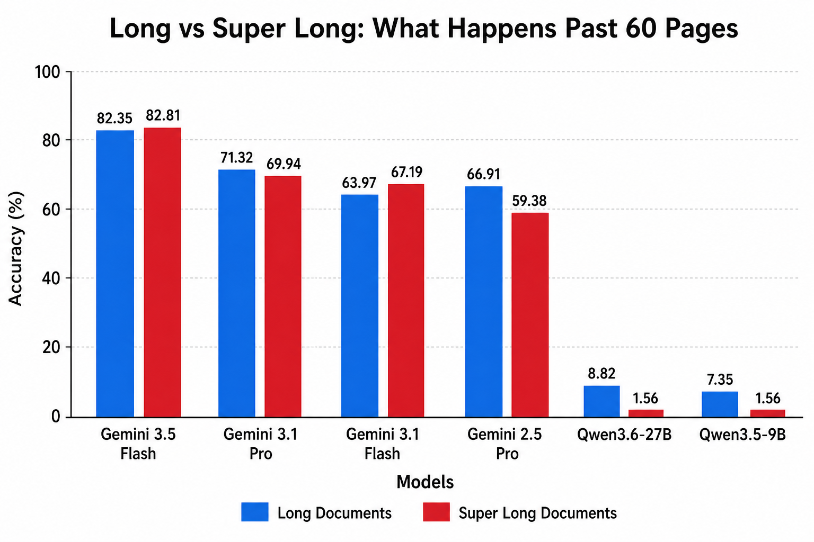
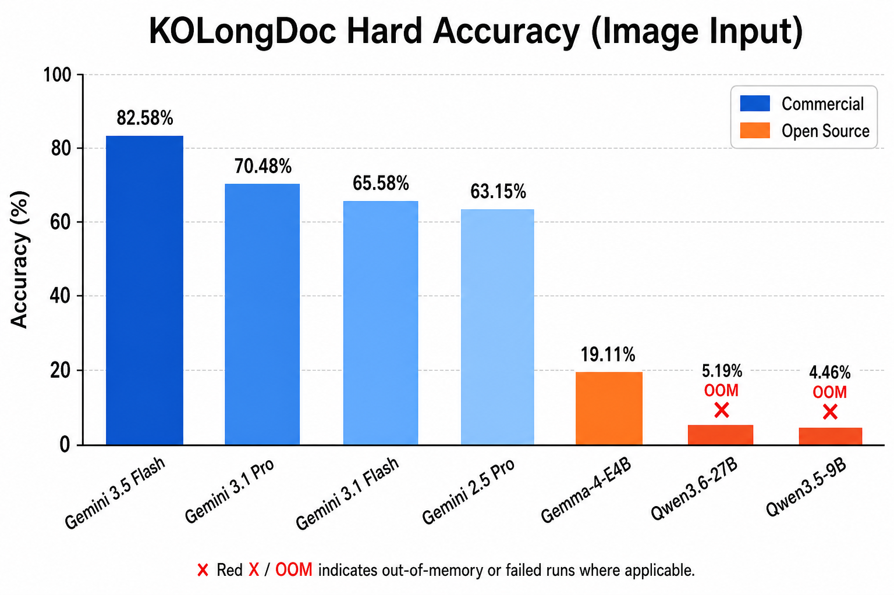

공공기관 보고서 60페이지. 표 7개, 그래프 4개, 본문 텍스트가 뒤엉킨 PDF가 있다. “3페이지의 예산액과 47페이지의 집행액의 차이를 구하라”는 질문에 Gemini 3.5 Flash는 **82.5%**의 정확도를 보였다. 같은 질문에 한국 오픈소스 VLM 대부분은 아예 답변을 생성하지 못했다. 메모리 부족(OOM)으로 죽어버렸다.
Marker Inc. Korea가 공개한 KOLongDoc은 “멀티모달 AI가 긴 한국어 문서를 얼마나 읽어내는가”를 처음으로 제대로 측정한 벤치마크다. 결과는 예상보다 훨씬 더 극적이었다.
기존 벤치마크가 놓친 것: “길이”와 “추론의 연쇄”
한국어 VLM 벤치마크는 이미 여럿 존재한다. KO-VQA, KO-VDC, KO-OCRAG, KOFFVQA, KoViDoRe, K-MMBench, K-DTCBench—리스트만 봐도 상당하다. OCR 정확도, 단일 이미지 질의응답, 차트 해석 등 각자 측정하는 영역이 있다.
하지만 이 벤치마크들 모두가 놓친 영역이 있다. 바로 “길다”는 것 자체가 만들어내는 난이도다.
기존 벤치마크는 1~2장짜리 문서나 단일 이미지가 기본 단위다. 현실의 공공문서는 그렇지 않다. 감사보고서, 예산서, 환경영향평가서—수십 페이지에 걸쳐 표, 차트, 각주, 부록이 얽혀 있다. 정답을 찾으려면 여러 페이지를 오가며 정보를 연결해야 한다. 이걸 Multi-hop 추론이라 부른다.
KOLongDoc은 바로 이 빈틈을 겨냥했다. 공공데이터포털에서 수집한 100개의 실제 공공기관 문서, 각 문서당 2개의 multi-hop QA 문항, 총 200문항으로 구성됐다.
문서가 “길다”는 것의 의미: 60페이지를 넘으면 무슨 일이 벌어지나

KOLongDoc은 문서를 두 그룹으로 나눴다.
- Long Document (< 60페이지): 68개 문서, 136문항
- Super Long Document (≥ 60페이지): 32개 문서, 64문항
이 구분이 중요한 이유는, 60페이지를 넘어가면 오픈소스 모델들이 집단으로 쓰러지기 때문이다. Super Long 구간에서 제대로 평가가 완료된 오픈소스 모델은 단 하나도 없었다. 전부 OOM(메모리 초과)이나 타임아웃이다.
문제의 난이도를 체감해보자. 실제 문항 예시:
“붙임 3’의 퇴적물 조사 결과에서 구리 농도가 가장 높은 정점과 아연 농도가 가장 높은 정점의 이름을 각각 찾고, 두 정점 중 총유기탄소(TOC) 함량이 더 낮은 정점의 이름과 그 TOC(%) 값은 무엇인가?”
이건 한 페이지에서 답이 나오는 게 아니다. 퇴적물 조사 결과 테이블에서 최댓값을 찾고, 다른 페이지의 TOC 데이터와 교차 대조해야 한다. Gemini 3.5 Flash조차 이 문항에서 정확도 66.6%에 그쳤다. 정답 keyword 세 개 중 하나를 놓쳤기 때문이다.
상용 vs 오픈소스: 벌어진 격차의 실체
평가는 두 가지 버전으로 진행됐다. Hard(정답 keyword를 전부 포함해야 1점, 아니면 0점)와 Soft(포함 비율에 따라 0~1점). 그리고 입력 방식에 따라 이미지 직접 입력과 텍스트 추출 입력으로 나뉜다.

이미지 입력, Hard 기준 상위 모델:
| 모델 | Long | Super Long | 평균 |
|---|---|---|---|
| Gemini 3.5 Flash | 82.35 | 82.81 | 82.58 |
| Gemini 3.1 Pro | 71.32 | 69.94 | 70.48 |
| Gemini 3.1 Flash | 63.97 | 67.19 | 65.58 |
| Gemini 2.5 Pro | 66.91 | 59.38 | 63.15 |
가장 놀라운 건 Gemini 3.5 Flash가 Pro를 압도한다는 거다. “비용 절감용 경량 모델”이라는 Flash의 위치가 생각할거리를 던진다. Pro 모델의 더 무거운 추론이 오히려 독이 된 건지, 아니면 Flash의 아키텍처가 multi-hop QA에 더 적합한 건지—벤치마크 결과가 던지는 흥미로운 질문이다.
오픈소스 모델은 참담하다. Qwen3.6-27B가 5.19%로 최고 성능. 나머지는 대부분 OOM이나 타임아웃이다. Gemma 4 31B, EXAONE 4.5-33B 같은 “큰” 모델들조차 A100 80GB GPU에서 돌아가지 못했다. 문서가 길어지면 단순히 “성능이 떨어지는” 수준이 아니라 아예 실행이 불가능해진다.
상용 API 모델과 오픈소스 모델 사이의 격차가 “조금 차이”가 아니라 질적으로 다른 차원에 있다는 걸 보여준다.
이미지로 읽을 때 vs 텍스트로 읽을 때
흥미로운 패턴 하나: 모든 모델이 이미지 입력에서 더 높은 성능을 보인다. Gemini 3.5 Flash를 기준으로 Hard 정확도가 이미지 82.58% vs 텍스트 68.52%다. 14%p 차이.
직관적이지 않다. 텍스트로 추출해서 주면 더 깔끔할 것 같은데, 실제로는 이미지를 직접 보는 게 낫다. 이유는 아마도 공공문서의 레이아웃 때문이다. 표의 셀 병합, 각주의 위치, 차트와 본문의 관계—이런 시각적 맥락이 텍스트 추출 과정에서 손실된다. PyMuPDF가 표를 plaintext로 펼 때 “어느 값이 어느 열에 해당하는지”가 사라지는 거다.
하지만 이건 양날의 검이다. 이미지 입력이 성능이 좋지만, 그만큼 GPU 메모리를 압도적으로 소모한다는 뜻이기도 하다. 오픈소스 모델들이 Super Long 구간에서 집단으로 OOM을 낸 건 이미지 입력 때문이다.
평가 방식의 솔직함: 완벽하지 않아도 측정은 한다
KOLongDoc의 평가 체계는 단순하지만 솔직하다. 모델의 답변 안에 정답 keyword가 얼마나 포함돼 있는지 비율로 점수를 매긴다.
예를 들어 keyword가 ['강화주문도 선착장', '영종도 동방', 0.458] 세 개인데 두 개만 맞췄으면 66.6%. 전부 맞추면 100%. Hard 버전은 100%일 때만 1점, Soft 버전은 비율 그대로 점수를 준다.
이 방식은 완벽하지 않다. keyword 누락이나 모델의 다른 표현 방식(예: “강화주문도” vs “강화주문도 선착장 앞”)을 정답으로 인정하지 못하는 한계가 있다. 하지만 장점도 명확하다—평가가 재현 가능하고 조작 가능성이 낮다. LLM-as-judge 같은 주관적 평가 없이, 기계적으로 판정한다.
문항 자체는 Gemini로 자동 생성한 뒤 인간이 직접 검수했다. 난이도 조정, multi-hop 여부 확인, 그리고 정답 keyword를 사람이 직접 선별하는 과정을 거쳤다. 자동 생성 + 인간 검증의 하이브리드 방식은 규모와 품질 사이에서 합리적인 타협점이다.
이 벤치마크가 가리키는 방향
KOLongDoc의 결과는 몇 가지를 명확히 말해준다.
첫째, 한국어 “긴 문서” 이해는 아직 해결되지 않은 문제다. 가장 좋은 모델이 82%다. 나머지 18%는 틀린다. 공공행정, 금융, 법률 등 실제 업무에서 18%의 오류는 치명적이다.
둘째, 오픈소스 VLM은 한국어 long document에서 사실상 작동하지 않는다. OOM과 타임아웃이 대부분이다. 이건 “성능이 아쉽다”의 수준이 아니라 인프라 한계다. 고해상도 이미지 수십 장을 컨텍스트에 넣는 데 필요한 메모리가 현재 오픈소스 배포의 상한을 넘어선다.
셋째, 한국어 AI 생태계에 “긴 문서” 평가 데이터가 없었다는 사실 자체가 시사한다. OCR, VQA, 차트 이해는 각자 열심히 벤치마크를 만들었는데, 정작 “수십 페이지 문서를 처음부터 끝까지 읽고 질문에 답하기”는 아무도 측정하지 않았다. 그 빈곳을 KOLongDoc이 채운다.
데이터셋은 HuggingFace에, 평가 코드는 GitHub에 공개돼 있다. 200문항, 100개의 실제 공공문서. 누구나 내려받아 평가할 수 있다.
긴 한국어 문서를 읽는 능력을 측정하는 벤치마크가 없었다는 건, 그 능력을 개선하려는 방향도 없었다는 뜻이다. KOLongDoc은 측정의 시작이자, 개선의 출발점이다.